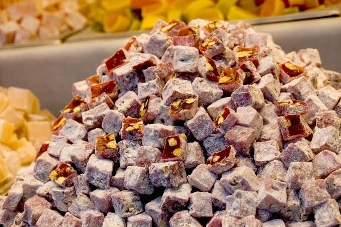

Safranbolu'nun Yöresel Lezzetleri
1. Safranbolu Lokumu

Safranbolu'nun en bilinen yöresel ürünlerinden biridir. Farklı çeşitleriyle ziyaretçilere sunulmaktadır.
2. Peruhi
Safranbolu mutfağında yer alan, iç harcıyla hazırlanan geleneksel bir hamur yemeğidir.
3. Bükme
İnce hamurla hazırlanan, yöresel iç harçlarla yapılan geleneksel bir hamur işidir.
4. Safran
Safranbolu'nun adını aldığı ve yöresel yemeklerde kullanılan değerli bir baharattır.